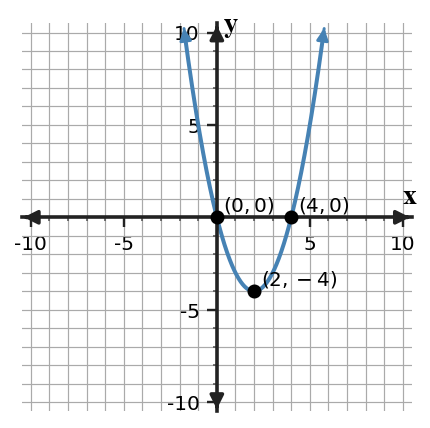
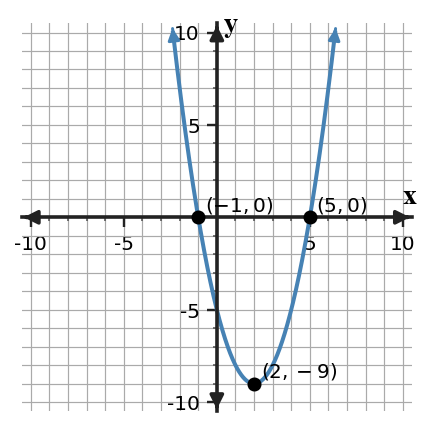
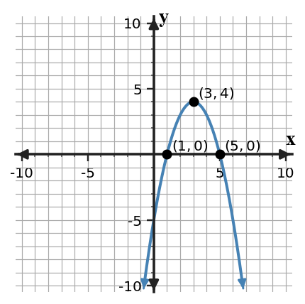

Polynomial Structure and Quadratic Graphs
Mathematical idea: Different forms of a quadratic reveal different graph features.
Students will identify quadratic features from equations and graphs. They will compare expression forms and critique whether a claimed feature is supported.
Learning Target
Learning Target: Students will connect polynomial expressions to quadratic graphs and key features.
I can statements
- I can construct connections between polynomial structure, quadratic graphs, and key features.
- I can predict graph features from equivalent quadratic expressions.
- I can critique whether a polynomial expression supports a claimed vertex, intercept, axis of symmetry, or direction of opening.
What's To Come
This is a long-range preview for future lessons. Do not solve it today. Instead, annotate it individually. Circle anything familiar, underline symbols or directions that seem important, and write notes about what information you think will be needed later.
As you annotate, ask yourself: What parts (words, symbols, graphs) do you KNOW? What parts look FAMILIAR? What parts look like jibberish?
Design a short quadratic context with maximum value $36$ at input $3$, then write an equation in vertex form and identify two meaningful points on the graph.
Teacher note: This is preview only. Look for annotations about known vocabulary, familiar graph or equation features, and questions students can revisit later.
Intro
Directions
Read the introduction aloud with a partner or in a small group. As you read, annotate the text by highlighting important ideas, circling key vocabulary, and writing short notes about connections, questions, or predictions in the margins.
Quadratic expressions can be written in forms that highlight different features. Vertex form shows the vertex directly because the squared expression reaches its least or greatest value at the shift. This makes it useful for questions about maximums, minimums, and axis of symmetry.
Factored form often shows the $x$-intercepts. If a quadratic is written as a product, each factor can be set equal to zero to find where the graph crosses the $x$-axis. Those intercepts also help locate the axis of symmetry halfway between them.
No single form is always best. A form is useful when it reveals the feature needed for the question. A student should choose the form that gives the clearest evidence instead of always expanding first.
Graphs, tables, and equations all show quadratic structure. The graph shows the parabola, the table shows symmetry and changing differences, and the expression shows features through its form.
In a context, a vertex might represent a maximum height, a minimum cost, or a turning point. Intercepts might represent when an object starts or lands, when profit is zero, or when a model reaches a benchmark.
Teacher note: Listen for students connecting vocabulary to representations, not just underlining isolated words.
Stop and Discuss
- What graph feature is visible in vertex form?
- What graph feature is often visible in factored form?
- Why might one form be more useful than another for a specific question?
Answers: 1) Vertex form shows the turning point directly. 2) Factored form often shows zeros and $x$-intercepts. 3) The useful form depends on which feature the question asks for.
Vertex form shows where the parabola turns.

For $y=(x-2)^2-4$, the vertex is $(2,-4)$ and the axis of symmetry is $x=2$.
| Feature | Evidence |
|---|---|
| Vertex | $(2,-4)$ from $(x-2)^2-4$ |
| Axis of symmetry | $x=2$ |
| $x$-intercepts | $(0,0)$ and $(4,0)$ on the graph |
In a height context, the vertex could represent the lowest or highest height depending on the opening direction.
Example 1: Identify the Vertex from Vertex Form
For $y=(x+4)^2-1$, identify the vertex.
Answer: Vertex $(-4,-1)$.
You Try It 1: Find the Vertex
For $y=(x-6)^2+3$, identify the vertex.
Answer: Vertex $(6,3)$.
Stop and Discuss
- Why does vertex form make the vertex easier to find?
Discussion guide: The squared part is zero at the shifted input, so the outside value gives the turning point output.
Factored form can reveal where a quadratic crosses the $x$-axis.

For $y=(x+1)(x-5)$, the zeros are $x=-1$ and $x=5$, so the intercepts are $(-1,0)$ and $(5,0)$.
The axis of symmetry is halfway between the zeros: $$\frac42=2.$$
The vertex lies on that axis, at $(2,-9)$ for this graph.
Example 2: Read Features from a Quadratic Graph
Use the graph to identify the vertex, axis of symmetry, and $x$-intercepts. Then write a possible factored-form equation.
Answer: Vertex $(2,-9)$; axis $x=2$; intercepts $(-1,0)$ and $(5,0)$; possible equation $y=(x+1)(x-5)$.
You Try It 2: Read Another Feature Graph
Use the graph to identify the vertex, axis of symmetry, and $x$-intercepts. Then write a possible factored-form equation.

Answer: Vertex $(3,4)$; axis $x=3$; intercepts $(1,0)$ and $(5,0)$; possible equation $y=-(x-1)(x-5)$.
Stop and Discuss
- How do the two intercepts help locate the axis of symmetry?
Discussion guide: The axis is halfway between symmetric intercepts.
Example 3: Choose a Useful Form
Compare the two quadratic graphs. For each one, state whether factored form or vertex form would be more useful for identifying the displayed features.

Answer: Use the feature shown: a graph emphasizing intercepts is well matched by factored form; a graph emphasizing the turning point is well matched by vertex form. Accept explanations tied to visible features.
You Try It 3: Pick the Helpful Form
For each question, choose the more useful form of the same quadratic: $y=(x-2)^2-9$ or $y=(x-5)(x+1)$. Question A: What is the vertex? Question B: What are the zeros?
Answer: A uses vertex form $y=(x-2)^2-9$ for vertex $(2,-9)$. B uses factored form $y=(x-5)(x+1)$ for zeros 5 and -1.
Stop and Discuss
- What question would make expanded form more useful than factored form?
Discussion guide: Expanded form can be useful for using $x=-b/(2a)$ or reading the $y$-intercept.
Example 4: Compare Axis-of-Symmetry Methods
Two methods can find the axis of symmetry for $y=(x-1)(x-7)$. Explain a method using the zeros and a method using expanded form, then compare the results.
Answer: Zeros are 1 and 7, so midpoint is $x=4$. Expanded form is $y=x^2-8x+7$, so $x=-b/(2a)=8/2=4$. The methods agree.
You Try It 4: Check Two Axis Methods
Find the axis of symmetry for $y=(x+3)(x-5)$ using zeros and using expanded form. Compare the results.
Answer: Zeros are -3 and 5; midpoint is $x=1$. Expanded form is $x^2-2x-15$, so $x=-b/(2a)=2/2=1$.
Stop and Discuss
- Why should both axis methods give the same answer?
Discussion guide: They describe the same graph, so equivalent forms must reveal the same axis.
Summary
Today you connected polynomial structure to quadratic graph features. You used expression form to decide which features were easiest to identify.
Vertex form highlights the vertex and axis of symmetry, while factored form highlights zeros and $x$-intercepts.
A common error is using a form that does not directly support the feature being claimed.
Strong understanding means you can choose a useful form, interpret the graph feature, and critique whether the evidence supports a claim.
Common Mistakes
- Reading the vertex sign incorrectly. Why it is tempting: vertex form contains parentheses. What to check instead: solve the inside for zero and use the outside value.
- Thinking factored form shows the vertex. Why it is tempting: zeros may feel like enough information. What to check instead: use the midpoint of zeros to get the axis, then find the vertex if needed.
- Ignoring opening direction. Why it is tempting: feature points get most attention. What to check instead: check the leading coefficient or graph direction.
- Assuming equivalent forms show different graphs. Why it is tempting: forms look different. What to check instead: remember equivalent expressions represent the same quadratic.
- Claiming a feature without evidence. Why it is tempting: answers can be memorized. What to check instead: point to the graph, equation form, or table pattern that supports the claim.
Optional Future Task Reflection
Look back at the future task. Do not solve it yet. Highlight one part that makes more sense now than it did at the beginning. Circle one part that still feels unfamiliar. Write one sentence about what representation you would look at first.
For $y=(x-3)^2+2$, identify the vertex.
Use the graph to identify the vertex, axis of symmetry, and $x$-intercepts of the quadratic. Then write a possible factored-form equation and explain how the graph features constrain it.

What is one idea about polynomial structure and quadratic graphs you understand better now than at the start of class? Write at least one complete sentence.
What is one thing about polynomial structure and quadratic graphs you still want to understand or practice? Be specific — name the idea, not just "everything."